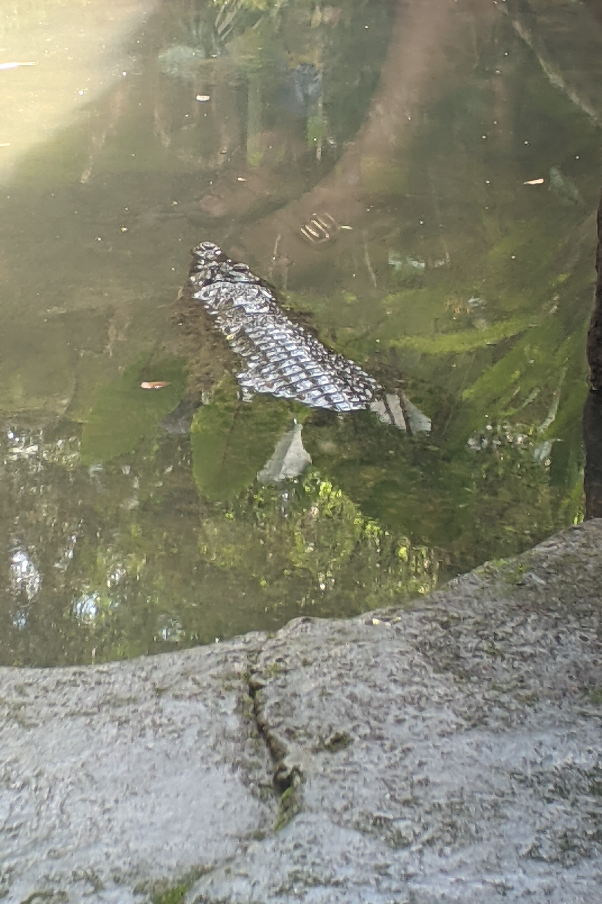

Denah Kebun Binatang Surabaya
Bekantan
- Salah Satu Jenis Primata Yang Memiliki Ciri Khas Di Hidungnya Yang Panjang Dan Besar
- Habitat: Pepohonan
Singa
- Mamalia Besar Yang Terkenal Dengan Keindahan Dan Kekuatannya
- Habitat: Savana, Padang Rumput, Hutan Belukar, Dll
Harimau Putih
- Varian Warna Dari Harimau Benggala Yang Memiliki Bulu Putih Atau Pucat Dengan Belang-Belang Hitam.
- Habitat: Hutan & Dataran rendah
kudanil
- Kuda Nil Jenis Ini Berukuran Besar, Panjang Tubuh 150-175 Cm Dan Berat Tubuh Hingga 100-240 Kg
- Habitat: Sungai Dan Rawa-Rawa

Rusa Totol
- Hewan berbulu coklat dengan totol-totol yang tersebar di seluruh tubuh
- Habitat: Hutan, Pegunungan, Lahan terbuka
Gajah
- Mamalia terbesar di darat dengan tubuh besar dan berat yang mencolok
- Habitat: Hutan & Savana terbuka
Unta Punuk Satu
- jenis unta yang memiliki satu punuk di punggungnya.
- Habitat: Daerah Kering Terutama Di Gurun Sahara
orangutan kalimantan
- hewan primata asal kalimantan yang besar dan berbulu
- Habitat: Hutan & Lahan Gambut
Primata
- Mamalia yang memiliki otak relatif besar dan penglihatan stereoskopis
- Habitat: hutan & savana

Menaiki Unta
- Dengan Membayar Tiket Masuk Seharga 35.000 Rupiah Anda Dapat Berkeliling Sambil Menunggangi Hewan Unta
Menaiki Gajah
- Dengan Membayar Tiket Seharga 75.000 Rupiah Anda Dapat Merasakan Sensasi Menaiki Gajah Sambil Menikmati Pemandangan Sekitar
Menaiki Perahu
- Hanya Dengan Rp. 10.000 Saja, Anda Dapat Melihat Banyak Satwa Dengan Perahu Sehingga Perjalanan Berkeliling Kebun Binatang Menjadi Lebih Seru.
Perpustakaan
- Terdapat Sekitar 1.500 Buku. Jenis Bukunya Pun Bermacam-Macam. Ada Buku Tentang Fauna Dan Satwa, Ada Pula Buku Pengetahuan Umum dan Rujukan Skripsi Untuk Mahasiswa.
Zebra
- Mamalia Herbivora Yang Memiliki Tubuh Yang Ramping Dengan Garis-Garis Hitam Dan Putih Yang Mencolok Pada Kulitnya
- Habitat: Sabana, Padang Rumput, Hutan Semak, Dan Dataran Tinggi
Jerapah
- mamalia yang memiliki leher yang sangat panjang dan tubuh yang tinggi
- Habitat: daerah yang memiliki pohon-pohon dengan dedaunan yang lebat
Harimau Sumatra
- Salah Satu Subspesies Harimau Yang Merupakan Hewan Karnivora Terbesar Di Dunia
- Habitat: Dataran Rendah, Hutan, Pegunungan
Beruang Madu
- Jenis Beruang Yang Terkecil Di Antara Jenis Beruang Lainnya
- Habitat: Hutan Dataran Rendah, Hutan Perbukitan Dan Perbukitan
Rusa Timor
- Jenis Rusa Kecil Yang Memiliki Ukuran Tubuh Yang Lebih Kecil Daripada Beberapa Spesies Rusa Lainnya
- Habitat: Hutan & Pedesaan

Buaya Muara
- salah satu spesies buaya terbesar yang pernah ada
- Habitat: Sungai, pantai, danau, rawa
Iguana
- Hewan berpekepala segitiga yang memiliki tubuh dan ekor yang panjang serta ramping
- Habitat: hutan, Kebun, Pedesaan
Julang Mas
- Paruh Yang Besar Dan Kuat Yang Memiliki Penampilan Seperti Kerah Yang Terlihat Melengkung Di Sekitar Leher
- Habitat: Hutan